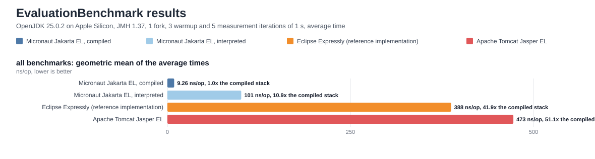

{kind=link}

Micronaut Jakarta EL
A Jakarta Expression Language implementation compiled at compilation time
Version: 1.0.0-SNAPSHOT
1 Introduction
Micronaut Jakarta EL is an implementation of the Jakarta Expression Language 6.0 specification whose expressions and bean resolution are prepared at compilation time, with Micronaut SourceGen and an annotation processor.
An interpreting implementation parses an expression string, builds an abstract syntax tree and walks it on every evaluation, resolving each property reflectively along the way. This module moves all of that to compilation time:
-
every declared expression becomes a generated
jakarta.el.ValueExpressionorjakarta.el.MethodExpressionwhose body is the compiled form of the expression, so nothing is parsed and no tree is walked at evaluation time; -
every
@Introspectedtype is resolved through the bean introspection Micronaut already generates for it, which replaces the reflective lookups ofjakarta.el.BeanELResolver; -
every property access, method invocation, function call and static reference whose type is known at compilation time becomes a direct Java invocation.
The annotation processor runs for Java, Groovy and Kotlin and produces the same expression classes for all three; a Java build additionally gets them as readable generated sources.
The implementation passes the Jakarta Expression Language 6.0 Technology Compatibility Kit — 360 tests, no
failures, none skipped — on every build; the tests/jakarta-el-tck module of the repository runs it, and a
workflow publishes the evidence of each run.
The public API, annotations included, is marked @Experimental: it can change between minor versions until the
first stable release.
|
2 Why Micronaut Jakarta EL?
The goal of this module is to be a complete build-time implementation of Jakarta Expression Language 6.0 that does not parse, walk trees or use reflection at runtime. The reasons to prefer it over an interpreting implementation are outlined below.
Runtime Performance
The EvaluationBenchmark JMH benchmark evaluates the same set of expressions — from a property read to a stream
pipeline with two lambda expressions — with compiled Micronaut Jakarta EL, with its runtime interpreter, with
Eclipse Expressly (the reference implementation) and with Apache Tomcat Jasper EL, each against the context it
provides by default. The figure that sums a run up is the geometric mean of the average evaluation times over
all the benchmarks; its ratio reads as "how many times slower than the compiled expressions, on average".
OpenJDK 25.0.2 on Apple Silicon, JMH 1.37, 1 fork, 3 warmup and 5 measurement iterations of 1 s, average time:
| Implementation | Geometric mean of the average times | Relative to the compiled stack |
|---|---|---|
Micronaut compiled |
8.63 ns |
1.0x |
Micronaut interpreted |
82.9 ns |
9.6x |
Eclipse Expressly |
367 ns |
42.5x |
Tomcat Jasper EL |
449 ns |
52.0x |
In this run a compiled expression evaluated in 8.6 ns on average — about 43 times faster than the reference implementation and 52 times faster than Tomcat’s. The gap is narrowest, around 6x, where every implementation resolves at runtime (a bean not declared with a type), and widest — one hundred times and more — wherever the others fall back to reflection: a method call on a List or a String, a lambda expression coerced to a functional interface, a stream pipeline. The interpreter of this module, the fallback for expressions created at runtime, averaged 83 ns — itself over 4 times faster than the reference implementation — because it walks its trees against the same compiled runtime.
Click the chart for the chart of every benchmark; the benchmarks module of the repository holds the harness,
every figure with its error in its README.md, and runs with ./gradlew :micronaut-benchmarks:jmh.
No Reflection
A declared variable’s properties and methods compile to direct invocations, dynamic types resolve through the
bean introspections Micronaut already generates, operators whose operand types are known compile to the Java
operators, and a lambda expression passed to a method becomes a Java lambda implementing the parameter’s
functional interface — no LambdaExpression, no argument maps, no java.lang.reflect.Proxy. The paths a
typical expression takes use no reflection at all, which also means nothing to configure for a GraalVM native
image; the few reflective paths that remain are the ones the specification defines in reflective terms, listed
in When Reflection Is Used. This is verified continuously: the Java test suite and the complete
TCK also run compiled into a native image, with ./gradlew nativeTest.
Type Safety
The expressions are checked when the class compiles, not when a request arrives:
-
a property or method a declared type does not have is a compilation error, and a member served by a custom resolver at runtime is a warning;
-
an argument whose static type cannot be coerced to a function’s parameter is a compilation error;
-
an omitted
expectedTypeis inferred from the static type of the expression, and an expression whose type cannot be determined because an identifier is undeclared is a compilation error telling you what to declare; -
a syntax error reports the expression and the position, on the class that declares it.
Smaller Runtime
An application that declares its expressions in source ships no parser: the parser is a build-time module the
runtime never sees. An expression is a generated class, and looking one up by its string through the standard
jakarta.el.ExpressionFactory is a switch, not a parse.
How It Works
For the expression of the Quick Start the annotation processor generates:
@ELEnvironment(variables = @ELVariable(name = "book", type = Book.class))
@ELExpression("Book: ${book.title} costs ${book.unitPrice}")
protected Object evaluate(ELContext context) {
Book shared0 = (Book) ELResolution.resolveVariable(context, "book");
return "Book: " + Objects.toString(shared0.getTitle(), "")
+ " costs " + String.valueOf(shared0.getUnitPrice());
}The string was parsed once, by the processor. book is resolved once and its getters are called directly; the
concatenation is Java’s own; the result is returned without a coercion because its type is already the expected
one. What remains at runtime is one shared module — the coercions, the operators on values typed only at
evaluation time, the resolution for what stays dynamic and the typed stream API — and the interpreter walks its
trees against that same runtime, which is why it too stays well ahead of the other implementations.
3 Release History
You can find a list of releases (with release notes) here:
4 Quick Start
Add the annotation processor and the runtime to your build:
annotationProcessor("io.micronaut.el:micronaut-jakarta-el-processor")<annotationProcessorPaths>
<path>
<groupId>io.micronaut.el</groupId>
<artifactId>micronaut-jakarta-el-processor</artifactId>
</path>
</annotationProcessorPaths>
implementation("io.micronaut.el:micronaut-jakarta-el")<dependency>
<groupId>io.micronaut.el</groupId>
<artifactId>micronaut-jakarta-el</artifactId>
</dependency>Declare a bean with Micronaut’s Introspected:
Book
package example;
import io.micronaut.context.annotation.Executable;
import io.micronaut.core.annotation.Introspected;
@Introspected // (1)
public class Book {
private final String title;
private final String category;
private final double unitPrice;
public Book(String title, String category, double unitPrice) {
this.title = title;
this.category = category;
this.unitPrice = unitPrice;
}
public String getTitle() { // (2)
return title;
}
public String getCategory() {
return category;
}
public double getUnitPrice() {
return unitPrice;
}
@Executable // (3)
public double discounted(double percent) {
return unitPrice * (100 - percent) / 100;
}
}Book
package example
import io.micronaut.context.annotation.Executable
import io.micronaut.core.annotation.Introspected
@Introspected // (1)
class Book(val title: String, val category: String, val unitPrice: Double) { // (2)
@Executable // (3)
fun discounted(percent: Double): Double = unitPrice * (100 - percent) / 100
}Book
package example
import io.micronaut.context.annotation.Executable
import io.micronaut.core.annotation.Introspected
@Introspected // (1)
class Book {
final String title // (2)
final String category
final double unitPrice
Book(String title, String category, double unitPrice) {
this.title = title
this.category = category
this.unitPrice = unitPrice
}
@Executable // (3)
double discounted(double percent) {
unitPrice * (100 - percent) / 100
}
}| 1 | The introspection generated for the type is what resolves its properties at runtime, without reflection. |
| 2 | A property is read through its getter, which the introspection dispatches to directly. |
| 3 | Executable puts a method into the introspection, so that an expression can invoke it the same way. |
Declare the expressions that use it:
BookExpressions
package example;
import io.micronaut.el.annotation.ELEnvironment;
import io.micronaut.el.annotation.ELExpression;
import io.micronaut.el.annotation.ELMethodExpression;
import io.micronaut.el.annotation.ELVariable;
@ELEnvironment(variables = @ELVariable(name = "book", type = Book.class)) // (1)
@ELExpression(value = "${book.title}", expectedType = String.class, name = "TITLE") // (2)
@ELExpression(value = "Book: ${book.title} at ${book.unitPrice}", expectedType = String.class, name = "SUMMARY") // (3)
@ELExpression(value = "${book.unitPrice > 15 ? 'expensive' : 'cheap'}", expectedType = String.class, name = "PRICE_BAND")
@ELMethodExpression(value = "${book.discounted(10)}", expectedReturnType = double.class, name = "DISCOUNTED") // (4)
public class BookExpressions {
}BookExpressions
package example
import io.micronaut.el.annotation.ELEnvironment
import io.micronaut.el.annotation.ELExpression
import io.micronaut.el.annotation.ELMethodExpression
import io.micronaut.el.annotation.ELVariable
@ELEnvironment(variables = [ELVariable(name = "book", type = Book::class)]) // (1)
@ELExpression(value = "\${book.title}", expectedType = String::class, name = "TITLE") // (2)
@ELExpression(value = "Book: \${book.title} at \${book.unitPrice}", expectedType = String::class, name = "SUMMARY") // (3)
@ELExpression(value = "\${book.unitPrice > 15 ? 'expensive' : 'cheap'}", expectedType = String::class, name = "PRICE_BAND")
@ELMethodExpression(value = "\${book.discounted(10)}", expectedReturnType = Double::class, name = "DISCOUNTED") // (4)
class BookExpressionsBookExpressions
package example
import io.micronaut.el.annotation.ELEnvironment
import io.micronaut.el.annotation.ELExpression
import io.micronaut.el.annotation.ELMethodExpression
import io.micronaut.el.annotation.ELVariable
@ELEnvironment(variables = @ELVariable(name = "book", type = Book)) // (1)
@ELExpression(value = '${book.title}', expectedType = String, name = "TITLE") // (2)
@ELExpression(value = 'Book: ${book.title} at ${book.unitPrice}', expectedType = String, name = "SUMMARY") // (3)
@ELExpression(value = "\${book.unitPrice > 15 ? 'expensive' : 'cheap'}", expectedType = String, name = "PRICE_BAND")
@ELMethodExpression(value = '${book.discounted(10)}', expectedReturnType = double, name = "DISCOUNTED") // (4)
class BookExpressions {
}| 1 | The environment gives book a static type, so book.title compiles to a direct invocation of getTitle()
and a misspelt property is reported at compilation time. |
| 2 | A value expression, the type its result is coerced to and the name of the constant holding it in the generated registry of the class. |
| 3 | A composite expression: the literal text and the eval-expressions are concatenated, then coerced to the expected type. |
| 4 | A method expression, which invokes the method rather than reading a value. |
Evaluate them against any jakarta.el.ELContext:
BookExpressionsTest
package example;
import io.micronaut.el.CompiledELContext;
import io.micronaut.el.runtime.CompiledExpression;
import jakarta.el.ELContext;
import jakarta.el.ExpressionFactory;
import jakarta.el.ELManager;
import jakarta.el.ValueExpression;
import org.junit.jupiter.api.Test;
import static org.junit.jupiter.api.Assertions.assertEquals;
import static org.junit.jupiter.api.Assertions.assertTrue;
class BookExpressionsTest {
@Test
void evaluatesTheCompiledExpressions() {
ELContext context = new CompiledELContext() // (1)
.setBean("book", new Book("Jakarta EL", "reference", 20d));
ExpressionFactory factory = ELManager.getExpressionFactory();
ValueExpression title = factory.createValueExpression(context, "${book.title}", String.class); // (2)
assertTrue(title instanceof CompiledExpression); // (3)
assertEquals("Jakarta EL", title.getValue(context));
assertEquals("Book: Jakarta EL at 20.0",
factory.createValueExpression(context, "Book: ${book.title} at ${book.unitPrice}", String.class).getValue(context));
assertEquals(18d,
factory.createMethodExpression(context, "${book.discounted(10)}", double.class, new Class<?>[0]).invoke(context, null)); // (4)
assertEquals("expensive", BookExpressions$ELExpressions.PRICE_BAND.getValue(context)); // (5)
}
}BookExpressionsTest
package example
import io.micronaut.el.CompiledELContext
import io.micronaut.el.runtime.CompiledExpression
import jakarta.el.ELManager
import org.junit.jupiter.api.Assertions.assertEquals
import org.junit.jupiter.api.Assertions.assertTrue
import org.junit.jupiter.api.Test
class BookExpressionsTest {
@Test
fun evaluatesTheCompiledExpressions() {
val context = CompiledELContext() // (1)
.setBean("book", Book("Jakarta EL", "reference", 20.0))
val factory = ELManager.getExpressionFactory()
val title = factory.createValueExpression(context, "\${book.title}", String::class.java) // (2)
assertTrue(title is CompiledExpression) // (3)
assertEquals("Jakarta EL", title.getValue(context))
assertEquals("Book: Jakarta EL at 20.0",
factory.createValueExpression(context, "Book: \${book.title} at \${book.unitPrice}", String::class.java).getValue(context))
assertEquals(18.0,
factory.createMethodExpression(context, "\${book.discounted(10)}", Double::class.java, arrayOf()).invoke(context, null)) // (4)
assertEquals("expensive", `BookExpressions$ELExpressions`.PRICE_BAND.getValue(context)) // (5)
}
}BookExpressionsTest
package example
import io.micronaut.el.CompiledELContext
import io.micronaut.el.runtime.CompiledExpression
import jakarta.el.ELContext
import jakarta.el.ELManager
import jakarta.el.ExpressionFactory
import jakarta.el.ValueExpression
import org.junit.jupiter.api.Test
import static org.junit.jupiter.api.Assertions.assertEquals
import static org.junit.jupiter.api.Assertions.assertTrue
class BookExpressionsTest {
@Test
void evaluatesTheCompiledExpressions() {
ELContext context = new CompiledELContext() // (1)
.setBean("book", new Book("Jakarta EL", "reference", 20d))
ExpressionFactory factory = ELManager.expressionFactory
ValueExpression title = factory.createValueExpression(context, '${book.title}', String) // (2)
assertTrue(title instanceof CompiledExpression) // (3)
assertEquals("Jakarta EL", title.getValue(context))
assertEquals("Book: Jakarta EL at 20.0",
factory.createValueExpression(context, 'Book: ${book.title} at ${book.unitPrice}', String).getValue(context))
assertEquals(18d,
factory.createMethodExpression(context, '${book.discounted(10)}', double, new Class[0]).invoke(context, null)) // (4)
assertEquals("expensive",
factory.createValueExpression(context, "\${book.unitPrice > 15 ? 'expensive' : 'cheap'}", String).getValue(context))
}
}| 1 | CompiledELContext is the standard resolver chain of the specification with IntrospectionELResolver in
front, and holds the beans the expressions refer to by name. |
| 2 | The expressions are returned by the jakarta.el.ExpressionFactory of the module, registered as a service, so
code written against the standard API keeps working: createValueExpression is a lookup of the expression string
in the registries, not a parse. |
| 3 | What the factory returns is the class generated at compilation time. |
| 4 | A method expression is invoked the same way; the parameters are the ones written in the expression. |
| 5 | In Java and Kotlin the generated registry, BookExpressions$ELExpressions, also exposes each expression
under the name it was declared with. The Groovy compiler resolves the names of a class before the registry is
generated, so Groovy code reaches the expressions through the factory. |
5 Declaring Expressions
The module ships one small set of annotations, all in io.micronaut.el.annotation:
| Annotation | Use it to |
|---|---|
Declare a value expression to compile — |
|
Declare a method expression — one that names a method to invoke, such as |
|
Describe the world the expressions of a class or member live in: the typed variables, the imported classes and packages, the static imports and the function libraries. |
|
Give one variable a name and a static type inside an |
|
Register a class of functions for the expressions, optionally under a namespace prefix — every public static method becomes a function. |
|
Mark a single method as a function, with its own name and prefix, when the class should not export every static method — also works on instance methods of beans. |
An expression is declared with @ELExpression, which is repeatable, on a type, a field, a method or a parameter.
The element is only a holder: the processor generates one class per expression, plus a registry per declaring
class that maps each expression string to its implementation.
CatalogExpressions
package example;
import io.micronaut.el.annotation.ELEnvironment;
import io.micronaut.el.annotation.ELExpression;
import io.micronaut.el.annotation.ELFunctions;
import io.micronaut.el.annotation.ELVariable;
import java.util.List;
@ELEnvironment(
variables = {
@ELVariable(name = "book", type = Book.class),
@ELVariable(name = "books", type = List.class) // (1)
},
imports = Math.class, // (2)
functions = @ELFunctions(value = TextFunctions.class, prefix = "text") // (3)
)
@ELExpression(value = "${text:shout(book.title)}", expectedType = String.class, name = "SHOUTED") // (4)
@ELExpression(value = "${text:initials(book.title)}", expectedType = String.class, name = "INITIALS")
@ELExpression(value = "${Math.max(book.unitPrice, 25)}", expectedType = double.class, name = "FLOOR_PRICE") // (5)
@ELExpression(
value = "${books.stream().filter(b -> b.unitPrice > 10).map(b -> b.title).toList()}", // (6)
expectedType = List.class,
name = "EXPENSIVE_TITLES"
)
@ELExpression(expression = "${(price -> price * 2)(book.unitPrice)}", expectedType = double.class, name = "DOUBLED") // (7)
@ELExpression(
expression = "${discount = (price, percent) -> price * (100 - percent) / 100; discount(book.unitPrice, 25)}", // (8)
expectedType = double.class,
name = "DISCOUNTED"
)
@ELExpression(
expression = "${books.stream().sorted((a, b) -> a.unitPrice - b.unitPrice).map(b -> b.title).toList()}", // (9)
expectedType = List.class,
name = "BY_PRICE"
)
public class CatalogExpressions {
}CatalogExpressions
package example
import io.micronaut.el.annotation.ELEnvironment
import io.micronaut.el.annotation.ELExpression
import io.micronaut.el.annotation.ELFunctions
import io.micronaut.el.annotation.ELVariable
@ELEnvironment(
variables = [
ELVariable(name = "book", type = Book::class),
ELVariable(name = "books", type = List::class) // (1)
],
imports = [Math::class], // (2)
functions = [ELFunctions(value = TextFunctions::class, prefix = "text")] // (3)
)
@ELExpression(value = "\${text:shout(book.title)}", expectedType = String::class, name = "SHOUTED") // (4)
@ELExpression(value = "\${text:initials(book.title)}", expectedType = String::class, name = "INITIALS")
@ELExpression(value = "\${Math.max(book.unitPrice, 25)}", expectedType = Double::class, name = "FLOOR_PRICE") // (5)
@ELExpression(
value = "\${books.stream().filter(b -> b.unitPrice > 10).map(b -> b.title).toList()}", // (6)
expectedType = List::class,
name = "EXPENSIVE_TITLES"
)
@ELExpression(expression = "\${(price -> price * 2)(book.unitPrice)}", expectedType = Double::class, name = "DOUBLED") // (7)
@ELExpression(
expression = "\${discount = (price, percent) -> price * (100 - percent) / 100; discount(book.unitPrice, 25)}", // (8)
expectedType = Double::class,
name = "DISCOUNTED"
)
@ELExpression(
expression = "\${books.stream().sorted((a, b) -> a.unitPrice - b.unitPrice).map(b -> b.title).toList()}", // (9)
expectedType = List::class,
name = "BY_PRICE"
)
class CatalogExpressionsCatalogExpressions
package example
import io.micronaut.el.annotation.ELEnvironment
import io.micronaut.el.annotation.ELExpression
import io.micronaut.el.annotation.ELFunctions
import io.micronaut.el.annotation.ELVariable
@ELEnvironment(
variables = [
@ELVariable(name = "book", type = Book),
@ELVariable(name = "books", type = List) // (1)
],
imports = Math, // (2)
functions = @ELFunctions(value = TextFunctions, prefix = "text") // (3)
)
@ELExpression(value = '${text:shout(book.title)}', expectedType = String, name = "SHOUTED") // (4)
@ELExpression(value = '${text:initials(book.title)}', expectedType = String, name = "INITIALS")
@ELExpression(value = '${Math.max(book.unitPrice, 25)}', expectedType = double, name = "FLOOR_PRICE") // (5)
@ELExpression(
value = '${books.stream().filter(b -> b.unitPrice > 10).map(b -> b.title).toList()}', // (6)
expectedType = List,
name = "EXPENSIVE_TITLES"
)
@ELExpression(expression = '${(price -> price * 2)(book.unitPrice)}', expectedType = double, name = "DOUBLED") // (7)
@ELExpression(
expression = '${discount = (price, percent) -> price * (100 - percent) / 100; discount(book.unitPrice, 25)}', // (8)
expectedType = double,
name = "DISCOUNTED"
)
@ELExpression(
expression = '${books.stream().sorted((a, b) -> a.unitPrice - b.unitPrice).map(b -> b.title).toList()}', // (9)
expectedType = List,
name = "BY_PRICE"
)
class CatalogExpressions {
}| 1 | variables declares the name and the static type of the variables the expressions use. A variable declared
this way is still looked up in the ELContext at evaluation time, but every property access, method invocation
and coercion applied to it is resolved statically. A member the type does not declare is reported at compilation
time. |
| 2 | imports, importPackages and staticImports make classes, packages and statically imported fields
available to the expressions, the way the language defines static references. Among several overloads,
Math.max here, the one whose parameters fit the static types of the arguments best is selected at compilation
time. |
| 3 | functions lists a class whose public static methods are functions without any annotation, optionally under
a namespace prefix; type is an alias of value. A class declaring its functions with @ELFunction needs no
listing in its own module, and keeps the names and prefixes it declares when listed from another. |
| 4 | A function is called with its prefix. |
| 5 | A static method of an imported class is called through the class name. |
| 6 | The collection operations of the chapter 2 of the specification, lambdas included, compile like the rest. |
| 7 | A lambda expression invoked immediately, and expression as an alias of value. |
| 8 | A lambda expression assigned to a variable and invoked by name; the semicolon operator evaluates the assignment, then the call. |
| 9 | A lambda expression with two parameters, passed to the sorted operation as its comparator. |
The functions are plain static methods:
TextFunctions
package example;
import io.micronaut.el.annotation.ELFunction;
public final class TextFunctions {
private TextFunctions() {
}
@ELFunction // (1)
public static String shout(String text) {
return text.toUpperCase() + "!";
}
@ELFunction("initials") // (2)
public static String initialsOf(String text) {
StringBuilder initials = new StringBuilder();
for (String word : text.split(" ")) {
initials.append(word.charAt(0));
}
return initials.toString();
}
}TextFunctions
package example
import io.micronaut.el.annotation.ELFunction
object TextFunctions {
@JvmStatic
@ELFunction // (1)
fun shout(text: String): String = text.uppercase() + "!"
@JvmStatic
@ELFunction("initials") // (2)
fun initialsOf(text: String): String = text.split(" ").joinToString("") { it.substring(0, 1) }
}TextFunctions
package example
import io.micronaut.el.annotation.ELFunction
final class TextFunctions {
private TextFunctions() {
}
@ELFunction // (1)
static String shout(String text) {
text.toUpperCase() + "!"
}
@ELFunction("initials") // (2)
static String initialsOf(String text) {
text.split(" ").collect { it.charAt(0) }.join()
}
}| 1 | @ELFunction declares the method as a function, under its own name. Once a method of the class is
annotated, only the annotated methods are functions; a class with no annotated method exposes all its public
static methods, when listed with @ELFunctions. |
| 2 | @ELFunction can give a function another name, with name, an alias of value, and a namespace prefix of
its own. |
Functions on beans
A function does not have to be static. The public instance methods a class declares are functions too, invoked
on the instance the ELContext provides at evaluation time, which is how a Micronaut bean offers functions:
PricingService
package example;
import io.micronaut.el.annotation.ELFunction;
import jakarta.inject.Singleton;
@Singleton // (1)
public class PricingService {
private final double discount = 0.1;
@ELFunction(prefix = "pricing") // (2)
public double quote(Book book, int quantity) {
return book.getUnitPrice() * quantity * (1 - discount);
}
@ELFunction(prefix = "pricing", name = "currency") // (3)
public static String currencyCode() {
return "EUR";
}
}PricingService
package example
import io.micronaut.el.annotation.ELFunction
import jakarta.inject.Singleton
@Singleton // (1)
class PricingService {
private val discount = 0.1
@ELFunction(prefix = "pricing") // (2)
fun quote(book: Book, quantity: Int): Double = book.unitPrice * quantity * (1 - discount)
companion object {
@JvmStatic
@ELFunction(prefix = "pricing", name = "currency") // (3)
fun currencyCode(): String = "EUR"
}
}PricingService
package example
import io.micronaut.el.annotation.ELFunction
import jakarta.inject.Singleton
@Singleton // (1)
class PricingService {
private final double discount = 0.1
@ELFunction(prefix = "pricing") // (2)
double quote(Book book, int quantity) {
book.unitPrice * quantity * (1 - discount)
}
@ELFunction(prefix = "pricing", name = "currency") // (3)
static String currencyCode() {
"EUR"
}
}| 1 | An ordinary bean: nothing lists it. A function declared with @ELFunction is found by the expressions of
the module declaring it, whatever the order of its classes; a function of another module is listed with
@ELFunctions(type = …), and keeps the name and the prefix it declares. |
| 2 | @ELFunction declares the method as a function, here with its namespace prefix; an instance method is invoked
on the instance. Once a method of the class is annotated, only the annotated methods are functions: a bean does
not expose every public method it has. |
| 3 | A static method is a function as well, invoked directly, here under another name. |
PricingExpressions
package example;
import io.micronaut.el.annotation.ELEnvironment;
import io.micronaut.el.annotation.ELExpression;
import io.micronaut.el.annotation.ELVariable;
@ELEnvironment(variables = @ELVariable(name = "book", type = Book.class)) // (1)
@ELExpression(value = "${pricing:quote(book, 3)}", expectedType = double.class, name = "QUOTE") // (2)
@ELExpression(value = "${pricing:quote(book, 3) += ' ' += pricing:currency()}", expectedType = String.class, name = "PRICED") // (3)
public class PricingExpressions {
}PricingExpressions
package example
import io.micronaut.el.annotation.ELEnvironment
import io.micronaut.el.annotation.ELExpression
import io.micronaut.el.annotation.ELVariable
@ELEnvironment(variables = [ELVariable(name = "book", type = Book::class)]) // (1)
@ELExpression(value = "\${pricing:quote(book, 3)}", expectedType = Double::class, name = "QUOTE") // (2)
@ELExpression(value = "\${pricing:quote(book, 3) += ' ' += pricing:currency()}", expectedType = String::class, name = "PRICED") // (3)
class PricingExpressionsPricingExpressions
package example
import io.micronaut.el.annotation.ELEnvironment
import io.micronaut.el.annotation.ELExpression
import io.micronaut.el.annotation.ELVariable
@ELEnvironment(variables = @ELVariable(name = "book", type = Book)) // (1)
@ELExpression(value = '${pricing:quote(book, 3)}', expectedType = double, name = "QUOTE") // (2)
@ELExpression(value = "\${pricing:quote(book, 3) += ' ' += pricing:currency()}", expectedType = String, name = "PRICED") // (3)
class PricingExpressions {
}| 1 | The environment declares the variable only: the functions need no declaration. |
| 2 | A call of the instance function, with the parameters compiled against its signature: a call that does not match the function, in name or in number of arguments, fails the compilation. |
| 3 | Both kinds mix in one expression. |
PricingExpressionsTest
package example;
import io.micronaut.context.ApplicationContext;
import io.micronaut.el.CompiledELContext;
import io.micronaut.el.ELBeanProvider;
import jakarta.el.ELContext;
import jakarta.el.ELException;
import org.junit.jupiter.api.Test;
import static org.junit.jupiter.api.Assertions.assertEquals;
import static org.junit.jupiter.api.Assertions.assertThrows;
import static org.junit.jupiter.api.Assertions.assertTrue;
class PricingExpressionsTest {
private final Book book = new Book("Jakarta EL", "reference", 20d);
@Test
void theFunctionIsInvokedOnTheBean() {
try (ApplicationContext applicationContext = ApplicationContext.run()) {
ELContext context = new CompiledELContext().setBean("book", book);
context.putContext(ELBeanProvider.class, (ELBeanProvider) applicationContext::getBean); // (1)
assertEquals(54d, PricingExpressions$ELExpressions.QUOTE.getValue(context)); // (2)
assertEquals("54.0 EUR", PricingExpressions$ELExpressions.PRICED.getValue(context));
}
}
@Test
void anInstanceCanBeRegisteredDirectly() {
ELContext context = new CompiledELContext().setBean("book", book);
context.putContext(PricingService.class, new PricingService()); // (3)
assertEquals(54d, PricingExpressions$ELExpressions.QUOTE.getValue(context));
}
@Test
void withoutAnInstanceTheEvaluationFails() {
ELContext context = new CompiledELContext().setBean("book", book);
ELException failure = assertThrows(ELException.class, () -> PricingExpressions$ELExpressions.QUOTE.getValue(context)); // (4)
assertTrue(failure.getMessage().contains("No instance of example.PricingService"), failure.getMessage());
}
}PricingExpressionsTest
package example
import io.micronaut.context.ApplicationContext
import io.micronaut.el.CompiledELContext
import io.micronaut.el.ELBeanProvider
import jakarta.el.ELException
import org.junit.jupiter.api.Assertions.assertEquals
import org.junit.jupiter.api.Assertions.assertThrows
import org.junit.jupiter.api.Assertions.assertTrue
import org.junit.jupiter.api.Test
class PricingExpressionsTest {
private val book = Book("Jakarta EL", "reference", 20.0)
@Test
fun theFunctionIsInvokedOnTheBean() {
ApplicationContext.run().use { applicationContext ->
val context = CompiledELContext().setBean("book", book)
context.putContext(ELBeanProvider::class.java, object : ELBeanProvider { // (1)
override fun <T : Any> get(type: Class<T>): T = applicationContext.getBean(type)
})
assertEquals(54.0, `PricingExpressions$ELExpressions`.QUOTE.getValue(context)) // (2)
assertEquals("54.0 EUR", `PricingExpressions$ELExpressions`.PRICED.getValue(context))
}
}
@Test
fun anInstanceCanBeRegisteredDirectly() {
val context = CompiledELContext().setBean("book", book)
context.putContext(PricingService::class.java, PricingService()) // (3)
assertEquals(54.0, `PricingExpressions$ELExpressions`.QUOTE.getValue(context))
}
@Test
fun withoutAnInstanceTheEvaluationFails() {
val context = CompiledELContext().setBean("book", book)
val failure = assertThrows(ELException::class.java) { `PricingExpressions$ELExpressions`.QUOTE.getValue<Any>(context) } // (4)
assertTrue(failure.message!!.contains("No instance of example.PricingService"), failure.message)
}
}PricingExpressionsTest
package example
import io.micronaut.context.ApplicationContext
import io.micronaut.el.CompiledELContext
import io.micronaut.el.ELBeanProvider
import jakarta.el.ELContext
import jakarta.el.ELException
import jakarta.el.ELManager
import org.junit.jupiter.api.Test
import static org.junit.jupiter.api.Assertions.assertEquals
import static org.junit.jupiter.api.Assertions.assertThrows
import static org.junit.jupiter.api.Assertions.assertTrue
class PricingExpressionsTest {
private final Book book = new Book("Jakarta EL", "reference", 20d)
@Test
void theFunctionIsInvokedOnTheBean() {
ApplicationContext.run().withCloseable { applicationContext ->
ELContext context = new CompiledELContext().setBean("book", book)
context.putContext(ELBeanProvider, applicationContext.&getBean as ELBeanProvider) // (1)
assertEquals(54d, ELManager.expressionFactory.createValueExpression(context, '${pricing:quote(book, 3)}', double).getValue(context)) // (2)
assertEquals("54.0 EUR", ELManager.expressionFactory
.createValueExpression(context, "\${pricing:quote(book, 3) += ' ' += pricing:currency()}", String).getValue(context))
}
}
@Test
void anInstanceCanBeRegisteredDirectly() {
ELContext context = new CompiledELContext().setBean("book", book)
context.putContext(PricingService, new PricingService()) // (3)
assertEquals(54d, ELManager.expressionFactory.createValueExpression(context, '${pricing:quote(book, 3)}', double).getValue(context))
}
@Test
void withoutAnInstanceTheEvaluationFails() {
ELContext context = new CompiledELContext().setBean("book", book)
ELException failure = assertThrows(ELException) {
ELManager.expressionFactory.createValueExpression(context, '${pricing:quote(book, 3)}', double).getValue(context) // (4)
}
assertTrue(failure.message.contains("No instance of example.PricingService"), failure.message)
}
}| 1 | A Micronaut application registers its bean context as the ELBeanProvider of the ELContext, once,
and every bean can declare functions. |
| 2 | The function is invoked on the bean. |
| 3 | Without a container, the instance is registered under its type with the standard putContext. |
| 4 | With neither, the evaluation fails with an ELException saying so. |
A function on a bean is a compiled construct: the interpreter resolves functions through the
jakarta.el.FunctionMapper of the context, which the specification defines over static methods only.
|
@ELEnvironment is the compilation time counterpart of the jakarta.el.ELContext. It is declared on the class,
or on the member holding the expressions, in which case it applies to those on top of the environment of the
class. The expressions declared on a method, or on one of its parameters, additionally see the parameters of the
method as variables, under their names and with their declared types.
The generated registry matches the expected type of a request: an expression declared with
expectedType = String.class is only returned for a request with String.class. A primitive and its wrapper
are the same expectation, so double.class and Double.class match each other. A request for the same string
with another type, Object.class included, is treated as a different expression, and is rejected as not compiled
unless the interpreter module is present.
|
Any annotation string containing #{...} is treated by Micronaut as one of its own evaluated
expressions. The processor reads the original text back out, so #{...} works in a plain holder class, but on a
Micronaut bean Micronaut will also try to compile it with its own expression language. Prefer ${...} for
@ELExpression: the specification parses the two identically. An annotation of your own can use #{...} with
the processor described in Examples and Use Cases.
|
What the processor generates
For ${book.title} with book declared as a Book, the generated implementation contains the invocation
itself:
public final class BookExpressions$Expression0 extends CompiledValueExpression {
public BookExpressions$Expression0() {
super("${book.title}", "${book[\"title\"]}", java.lang.String.class); (1)
}
@Override
protected Object evaluate(ELContext context) {
return ((Book) ELResolution.resolveIdentifier(context, "book")).getTitle(); (2)
}
@Override
public void setValue(ELContext context, Object value) {
ELResolution.setValue(context, (Book) ELResolution.resolveIdentifier(context, "book"), "title", value); (3)
}
}| 1 | The expression as written, its canonical form, which is what equals compares, and the expected type. |
| 2 | The identifier is resolved through the context once, then the property is read with a direct invocation. |
| 3 | setValue, getType, isReadOnly and getValueReference are generated when the expression is an lvalue. An
expression that is not an lvalue inherits the base class behaviour, which rejects assignment with a
PropertyNotWritableException as the specification requires. |
Errors at compilation time
An expression that cannot be compiled fails the compilation of the class declaring it. The message carries the expression, the position of the error in it, and the class, so that the mistake never reaches a runtime:
Expressions.java:7: error: Unexpected token RCURL('}') in the expression [${ book.title + }] at the position 16 (1)
public class Expressions {
^| 1 | The file and the line of the declaring class, the message of the parser, the expression and the position. |
The same holds for a composite method expression, a function that is not declared, a static field the imported class does not have, an assignment to something that is not an lvalue, or a construction mixing set elements and map entries.
A member that the static type of a variable does not declare is a warning rather than an error, because a custom
jakarta.el.ELResolver may serve it at runtime, which is where the access is then left:
warning: The type example.Book does not declare the property 'titel'; the access is left to the resolvers at runtimeThe types the standard resolvers read by key, index or name, maps, collections, arrays, resource bundles and optionals, are not reported.
The expected type
expectedType names the type the result of every evaluation is coerced to, with the standard coercion rules of
the language. It can be omitted: the compiler then infers it from the static type of the expression —
${book.discounted(10)} is a Double because discounted returns one, a comparison is a Boolean, a
composite expression is a String, and an expression whose type the compiler does not know is an Object. The
same applies to expectedReturnType of an @ELMethodExpression, inferred from the invocation. The generated
ExpressionFactory serves an expression with an inferred type for that type, its primitive counterpart and
Object.class.
6 Declaring Beans
Beans are declared with Micronaut’s own Introspected, not with an annotation of this module:
Book
package example;
import io.micronaut.context.annotation.Executable;
import io.micronaut.core.annotation.Introspected;
@Introspected // (1)
public class Book {
private final String title;
private final String category;
private final double unitPrice;
public Book(String title, String category, double unitPrice) {
this.title = title;
this.category = category;
this.unitPrice = unitPrice;
}
public String getTitle() { // (2)
return title;
}
public String getCategory() {
return category;
}
public double getUnitPrice() {
return unitPrice;
}
@Executable // (3)
public double discounted(double percent) {
return unitPrice * (100 - percent) / 100;
}
}Book
package example
import io.micronaut.context.annotation.Executable
import io.micronaut.core.annotation.Introspected
@Introspected // (1)
class Book(val title: String, val category: String, val unitPrice: Double) { // (2)
@Executable // (3)
fun discounted(percent: Double): Double = unitPrice * (100 - percent) / 100
}Book
package example
import io.micronaut.context.annotation.Executable
import io.micronaut.core.annotation.Introspected
@Introspected // (1)
class Book {
final String title // (2)
final String category
final double unitPrice
Book(String title, String category, double unitPrice) {
this.title = title
this.category = category
this.unitPrice = unitPrice
}
@Executable // (3)
double discounted(double percent) {
unitPrice * (100 - percent) / 100
}
}| 1 | Micronaut generates a BeanIntrospection for the type at compilation time, and IntrospectionELResolver
reads and writes the properties through it. The introspection dispatches to a direct invocation, so no reflection
is involved. |
| 2 | A property is whatever the introspection exposes: a getter, a record component, a Kotlin property. |
| 3 | A method reaches the same path once it is annotated with Executable, which is what puts it into the introspection. A method that is not executable is resolved reflectively, as described in When Reflection Is Used. |
IntrospectionELResolver is the first resolver of the chain built by ELResolvers.standard(). A type with no
introspection is left unresolved, so the standard resolvers of the specification pick it up and a model that
mixes introspected and plain types still resolves.
Any type that is already introspected for another reason is resolvable by expressions with no further
annotation, including third party types brought in with @Introspected(classes = …).
|
7 Examples and Use Cases
Jakarta Expression Language earns its place wherever your application wants a little logic as data: readable at the declaration, changeable without touching the surrounding Java, and — with this module — compiled and type-checked at build time, so a typo fails the build instead of a request, and evaluated in nanoseconds without parsing or reflection. Some places it fits:
Business rules on methods
Guard an operation with the rule written right where the operation is declared: a customer must be an adult and live in Europe before registering, an order must stay under a credit limit, a discount only applies on weekdays.
@Eligible(value = "#{ fn:adult(customer.age) && fn:inEurope(customer.country) }",
otherwise = "#{ customer.name += ' must be an adult in Europe' }")
public String register(Customer customer) { ... }The parameters of the method are the variables of the expressions; the functions under fn: come from a shared
library of the rules of the domain.
Validation messages
A constraint in the style of Jakarta Validation, whose message is a template over the attributes of the constraint and the validated value:
@MinAmount(value = 100)
long amount
// its default message: "Must be greater than ${inclusive == true ? 'or equal to ' : ''}{value}"The {value} attribute interpolates first, the expression sees inclusive and validatedValue as typed
variables, and each segment of the template is compiled at build time.
Feature flags and routing conditions
Any annotation that decides something can carry the decision as an expression — which customers see a feature, which handler takes a message, what gets audited:
@FeatureFlag("#{ customer.plan == 'PRO' or fn:betaTester(customer.id) }")
public Dashboard newDashboard(Customer customer) { ... }Rules that only exist at runtime
When the expression itself is data — a discount rule from a database, a condition an operator edits — add the
interpreter module and create the expression from its string with the standard
jakarta.el.ExpressionFactory; everything an application declares in source stays compiled.
Building your own annotation
@Eligible and @MinAmount above are not part of this module: they are ordinary user annotations, and the rest
of this chapter walks through building them. Everything shown exists as working code — the
test-suite-custom-annotation module of the repository is the library declaring them, and the doc-examples
modules use it.
The annotation
Declare the annotation as you would any other — here it also binds an AOP interceptor, so that the condition guards the method call. Its members are plain strings holding the expressions:
@Documented
@Retention(RetentionPolicy.RUNTIME)
@Target(ElementType.METHOD)
@Around (1)
@InterceptorBinding
public @interface Eligible {
/**
* @return The condition the parameters of the method must satisfy
*/
String value() default ""; (2)
/**
* @return The condition, an alias of {@link #value()}
*/
@AliasFor(member = "value")
String condition() default "";
/**
* @return The message of the rejection, an expression evaluating to a string, or empty for a default one
*/
String otherwise() default ""; (3)
/**
* @return The name of the constant holding the compiled condition in the registry of the class, for the
* code that wants to reference it directly; derived from the condition when empty
*/
String name() default ""; (4)
}| 1 | The annotation binds an interceptor, which is where the expressions are evaluated. |
| 2 | The condition the parameters of the method must satisfy. |
| 3 | A second expression, the message of the rejection, evaluating to a string. |
| 4 | An optional name for the constants holding the compiled expressions in the generated registry of the class; without it the names are derived from the declaration. |
Using it looks like this. The parameters of the method are typed variables inside the expressions — customer
is the Customer parameter, so customer.age compiles to a direct call of getAge() and a misspelt property
is a compilation error. The functions of the library are available under their prefix, and imported classes by
their simple name:
RegistrationService
package example;
import io.micronaut.el.example.eligible.Eligible;
import io.micronaut.el.example.eligible.MinAmount;
import jakarta.inject.Singleton;
@Singleton
public class RegistrationService {
@Eligible(value = "#{ fn:adult(customer.age) && fn:inEurope(customer.country) }", // (1)
otherwise = "#{ customer.name += ' must be an adult in Europe' }", // (2)
name = "REGISTER") // (3)
public String register(Customer customer) {
return "registered " + customer.name();
}
@Eligible("${ customer.country == Locale.GERMANY.country }") // (4)
public String deposit(Customer customer,
@MinAmount(value = 100, inclusive = true,
message = "Must be greater than ${inclusive == true ? 'or equal to ' : ''}{value}") // (5)
long amount) {
return "deposited " + amount + " for " + customer.name();
}
}RegistrationService
package example
import io.micronaut.el.example.eligible.Eligible
import io.micronaut.el.example.eligible.MinAmount
import jakarta.inject.Singleton
@Singleton
open class RegistrationService {
@Eligible(value = "#{ fn:adult(customer.age) && fn:inEurope(customer.country) }", // (1)
otherwise = "#{ customer.name += ' must be an adult in Europe' }", // (2)
name = "REGISTER") // (3)
open fun register(customer: Customer): String = "registered " + customer.name
@Eligible("\${ customer.country == Locale.GERMANY.country }") // (4)
open fun deposit(customer: Customer,
@MinAmount(value = 100, inclusive = true,
message = "Must be greater than \${inclusive == true ? 'or equal to ' : ''}{value}") // (5)
amount: Long): String = "deposited $amount for " + customer.name
}RegistrationService
package example
import io.micronaut.el.example.eligible.Eligible
import io.micronaut.el.example.eligible.MinAmount
import jakarta.inject.Singleton
@Singleton
class RegistrationService {
@Eligible(value = '#{ fn:adult(customer.age) && fn:inEurope(customer.country) }', // (1)
otherwise = "#{ customer.name += ' must be an adult in Europe' }", // (2)
name = "REGISTER") // (3)
String register(Customer customer) {
"registered " + customer.name
}
@Eligible('${ customer.country == Locale.GERMANY.country }') // (4)
String deposit(Customer customer,
@MinAmount(value = 100L, inclusive = true,
message = "Must be greater than \${inclusive == true ? 'or equal to ' : ''}{value}") // (5)
long amount) {
"deposited " + amount + " for " + customer.name
}
}| 1 | The condition over the parameters of the method, calling two functions of the library under their prefix. |
| 2 | The message of the rejection, another expression. |
| 3 | The name of the generated constant. |
| 4 | The ${...} delimiters of the specification work too: the processor stores them as #{...}, which nothing in
Micronaut resolves as a property placeholder. |
| 5 | A constraint in the style of Jakarta Validation on a parameter: its message is a template over the
attributes of the constraint, {value}, and the expressions of the specification, which see those attributes
and the validated value as typed variables. |
The constraint declares its message with a default in the style of the constraints of Jakarta Validation:
@Documented
@Retention(RetentionPolicy.RUNTIME)
@Target(ElementType.PARAMETER)
public @interface MinAmount {
/**
* @return The minimum
*/
long value() default 0;
/**
* @return The minimum, an alias of {@link #value()}
*/
@AliasFor(member = "value")
long minimum() default 0;
/**
* @return Whether the minimum itself is accepted
*/
boolean inclusive() default false;
/**
* @return The message of the violation, a template over {@code {value}}, {@code {inclusive}} and the
* expressions of the specification
*/
String message() default "Must be greater than ${inclusive == true ? 'or equal to ' : ''}{value}"; (1)
}| 1 | The template: literal text, the {value} attribute and an expression over the inclusive attribute. |
The processor
Micronaut treats any annotation string containing #{...} as one of its own evaluated expressions, and would
fail to compile an expression of the Jakarta language. An io.micronaut.inject.annotation.AnnotationRemapper,
which runs inside the annotation metadata builder before anything else sees the annotation, takes the text back
and declares it:
public final class EligibleRemapper implements AnnotationRemapper {
@Override
public String getPackageName() {
return Eligible.class.getPackageName(); (1)
}
@Override
public List<AnnotationValue<?>> remap(AnnotationValue<?> annotation, VisitorContext visitorContext) {
if (!annotation.getAnnotationName().equals(Eligible.class.getName())) {
return List.of(annotation);
}
String condition = textOf(annotation.getValues().get(AnnotationMetadata.VALUE_MEMBER)); (2)
if (condition == null) {
return List.of(annotation);
}
String otherwise = textOf(annotation.getValues().get("otherwise"));
String name = annotation.stringValue("name").orElse("");
List<AnnotationValue<?>> remapped = new ArrayList<>();
AnnotationValueBuilder<Eligible> eligible = AnnotationValue.builder(Eligible.class)
.value(condition)
.member("name", name);
if (otherwise != null) {
eligible.member("otherwise", otherwise);
}
remapped.add(eligible.build()); (3)
remapped.add(AnnotationValue.builder(ELExpression.class) (4)
.value(condition)
.member("expectedType", new AnnotationClassValue<>(Boolean.class))
.member("name", name)
.build());
if (otherwise != null) {
remapped.add(AnnotationValue.builder(ELExpression.class)
.value(otherwise)
.member("expectedType", new AnnotationClassValue<>(String.class))
.member("name", name.isEmpty() ? "" : name + "_OTHERWISE")
.build());
}
remapped.add(AnnotationValue.builder(ELEnvironment.class) (5)
.member("functions", AnnotationValue.builder(ELFunctions.class)
.value(EligibilityFunctions.class)
.build())
.member("imports", new AnnotationClassValue<>(Locale.class))
.build());
return remapped;
}
/**
* The expression as written, with {@code ${...}} stored as {@code #{...}}: the specification treats the two
* alike, while Micronaut resolves a {@code ${...}} in the metadata of a bean as a property placeholder.
*/
private static String textOf(Object value) {
String text;
if (value instanceof EvaluatedExpressionReference reference) {
text = reference.annotationValue().toString(); (6)
} else if (value instanceof String string) {
text = string;
} else {
return null;
}
text = text.trim();
if (text.isEmpty()) {
return null;
}
return text.startsWith("${") ? "#" + text.substring(1) : text; (7)
}
}| 1 | A remapper is registered for the package of the annotations it handles, in
META-INF/services/io.micronaut.inject.annotation.AnnotationRemapper. |
| 2 | The text of the member as written, taken back from what Micronaut made of it. |
| 3 | The same annotation, holding the text. |
| 4 | An @ELExpression for every expression, with its expected type and its name, which is compiled into the
registry of the class like any other declaration. |
| 5 | An @ELEnvironment beside them, listing the functions of the library and importing a class; declared on the
method, it applies to the expressions declared there. The parameters of the method are typed variables without
any declaration. The functions declare their own names and prefix: |
public final class EligibilityFunctions {
private EligibilityFunctions() {
}
@ELFunction(prefix = "fn") (1)
public static boolean adult(int age) {
return age >= 18;
}
@ELFunction(prefix = "fn", name = "inEurope") (2)
public static boolean isEuropean(String country) {
return country.equals("CZ") || country.equals("DE") || country.equals("FR");
}
}| 1 | A function under its own name, with its prefix. |
| 2 | A function under another name. |
| 3 | Micronaut has already replaced a string containing #{...} by an evaluated expression reference when the
remapper runs; the original text is inside it. |
| 4 | A ${...} is stored as #{...}: the specification treats the two alike, while Micronaut resolves a ${...}
in the metadata of a bean as a property placeholder. |
The processor of the constraint declares every ${...} segment of the message with the attributes of the
constraint and the validated value as typed variables:
public final class MinAmountRemapper implements AnnotationRemapper {
@Override
public String getPackageName() {
return MinAmount.class.getPackageName();
}
@Override
public List<AnnotationValue<?>> remap(AnnotationValue<?> annotation, VisitorContext visitorContext) {
if (!annotation.getAnnotationName().equals(MinAmount.class.getName())) {
return List.of(annotation);
}
String message = textOf(annotation.getValues().get("message"));
if (message == null) {
return List.of(annotation);
}
Map<CharSequence, Object> values = new LinkedHashMap<>(annotation.getValues());
values.put("message", message);
List<AnnotationValue<?>> remapped = new ArrayList<>();
remapped.add(new AnnotationValue<>(MinAmount.class.getName(), values));
for (String segment : ConstraintMessages.segmentsOf(message)) { (1)
remapped.add(AnnotationValue.builder(ELExpression.class)
.value(segment)
.member("expectedType", new AnnotationClassValue<>(String.class))
.build());
}
remapped.add(AnnotationValue.builder(ELEnvironment.class) (2)
.member("variables",
AnnotationValue.builder(ELVariable.class).member("name", "value").member("type", new AnnotationClassValue<>(Long.class)).build(),
AnnotationValue.builder(ELVariable.class).member("name", "inclusive").member("type", new AnnotationClassValue<>(Boolean.class)).build(),
AnnotationValue.builder(ELVariable.class).member("name", "validatedValue").member("type", new AnnotationClassValue<>(Long.class)).build())
.build());
return remapped;
}
private static String textOf(Object value) {
if (value instanceof String text) {
// stored with ${...} as #{...}, which nothing in Micronaut resolves as a property placeholder;
// a message template uses ${...}, so, unlike a whole-expression member, it never reaches the
// metadata builder as an evaluated expression reference
return text.replace("${", "#{");
}
return null;
}
}| 1 | Each segment is an expression of its own, keyed by its exact text, which is what the interpolation asks the factory for. |
| 2 | The attributes of the constraint, and the validated value, are the variables of the expressions. |
The runtime
The text is read back from the annotation metadata and handed to jakarta.el.ExpressionFactory, which returns
the compiled expression. The parameters of the invocation are bound by name:
EligibleInterceptor
package example;
import io.micronaut.aop.InterceptorBean;
import io.micronaut.aop.MethodInterceptor;
import io.micronaut.aop.MethodInvocationContext;
import io.micronaut.el.CompiledELContext;
import io.micronaut.core.annotation.AnnotationValue;
import io.micronaut.core.type.Argument;
import io.micronaut.el.example.eligible.ConstraintMessages;
import io.micronaut.el.example.eligible.Eligible;
import io.micronaut.el.example.eligible.MinAmount;
import jakarta.el.ELManager;
import jakarta.el.ValueExpression;
import jakarta.inject.Singleton;
import java.util.Map;
import java.util.concurrent.ConcurrentHashMap;
@Singleton
@InterceptorBean(Eligible.class) // (1)
public class EligibleInterceptor implements MethodInterceptor<Object, Object> {
private final Map<String, ValueExpression> expressions = new ConcurrentHashMap<>();
@Override
public Object intercept(MethodInvocationContext<Object, Object> context) {
CompiledELContext elContext = new CompiledELContext();
context.getParameterValueMap().forEach(elContext::setBean); // (2)
for (Argument<?> argument : context.getArguments()) { // (5)
AnnotationValue<MinAmount> constraint = argument.getAnnotationMetadata().getAnnotation(MinAmount.class);
Object value = context.getParameterValueMap().get(argument.getName());
if (constraint != null && value instanceof Number number && !satisfies(constraint, number.longValue())) {
throw new NotEligibleException(ConstraintMessages.interpolate(constraint, value)); // (6)
}
}
String condition = context.stringValue(Eligible.class).orElseThrow(); // (3)
if (Boolean.TRUE.equals(expression(elContext, condition, Boolean.class).getValue(elContext))) {
return context.proceed();
}
String message = context.stringValue(Eligible.class, "otherwise")
.filter(otherwise -> !otherwise.isEmpty())
.map(otherwise -> expression(elContext, otherwise, String.class).<String>getValue(elContext))
.orElse(context.getMethodName() + " requires " + condition);
throw new NotEligibleException(message);
}
private static boolean satisfies(AnnotationValue<MinAmount> constraint, long amount) {
long minimum = constraint.longValue().orElseThrow();
return constraint.booleanValue("inclusive").orElse(false) ? amount >= minimum : amount > minimum;
}
private ValueExpression expression(CompiledELContext elContext, String text, Class<?> expectedType) {
return expressions.computeIfAbsent(text, key ->
ELManager.getExpressionFactory().createValueExpression(elContext, key, expectedType)); // (4)
}
}EligibleInterceptor
package example
import io.micronaut.aop.InterceptorBean
import io.micronaut.aop.MethodInterceptor
import io.micronaut.aop.MethodInvocationContext
import io.micronaut.el.CompiledELContext
import io.micronaut.core.annotation.AnnotationValue
import io.micronaut.el.example.eligible.ConstraintMessages
import io.micronaut.el.example.eligible.Eligible
import io.micronaut.el.example.eligible.MinAmount
import jakarta.el.ELManager
import jakarta.el.ValueExpression
import jakarta.inject.Singleton
import java.util.concurrent.ConcurrentHashMap
@Singleton
@InterceptorBean(Eligible::class) // (1)
class EligibleInterceptor : MethodInterceptor<Any, Any> {
private val expressions = ConcurrentHashMap<String, ValueExpression>()
override fun intercept(context: MethodInvocationContext<Any, Any>): Any? {
val elContext = CompiledELContext()
context.parameterValueMap.forEach { (name, value) -> elContext.setBean(name, value) } // (2)
for (argument in context.arguments) { // (5)
val constraint = argument.annotationMetadata.getAnnotation(MinAmount::class.java)
val value = context.parameterValueMap[argument.name]
if (constraint != null && value is Number && !satisfies(constraint, value.toLong())) {
throw NotEligibleException(ConstraintMessages.interpolate(constraint, value)) // (6)
}
}
val condition = context.stringValue(Eligible::class.java).orElseThrow() // (3)
if (expression(elContext, condition, Boolean::class.javaObjectType).getValue<Boolean?>(elContext) == true) {
return context.proceed()
}
val otherwise = context.stringValue(Eligible::class.java, "otherwise").orElse("")
val message = if (otherwise.isEmpty()) "${context.methodName} requires $condition"
else expression(elContext, otherwise, String::class.java).getValue<String>(elContext)
throw NotEligibleException(message)
}
private fun satisfies(constraint: AnnotationValue<MinAmount>, amount: Long): Boolean {
val minimum = constraint.longValue().orElseThrow()
return if (constraint.booleanValue("inclusive").orElse(false)) amount >= minimum else amount > minimum
}
private fun expression(elContext: CompiledELContext, text: String, expectedType: Class<*>): ValueExpression =
expressions.computeIfAbsent(text) { key ->
ELManager.getExpressionFactory().createValueExpression(elContext, key, expectedType) // (4)
}
}EligibleInterceptor
package example
import io.micronaut.aop.InterceptorBean
import io.micronaut.aop.MethodInterceptor
import io.micronaut.aop.MethodInvocationContext
import io.micronaut.el.CompiledELContext
import io.micronaut.core.annotation.AnnotationValue
import io.micronaut.core.type.Argument
import io.micronaut.el.example.eligible.ConstraintMessages
import io.micronaut.el.example.eligible.Eligible
import io.micronaut.el.example.eligible.MinAmount
import jakarta.el.ELManager
import jakarta.el.ValueExpression
import jakarta.inject.Singleton
import java.util.concurrent.ConcurrentHashMap
@Singleton
@InterceptorBean(Eligible) // (1)
class EligibleInterceptor implements MethodInterceptor<Object, Object> {
private final Map<String, ValueExpression> expressions = new ConcurrentHashMap<>()
@Override
Object intercept(MethodInvocationContext<Object, Object> context) {
CompiledELContext elContext = new CompiledELContext()
context.parameterValueMap.each { name, value -> elContext.setBean(name, value) } // (2)
for (Argument<?> argument : context.arguments) { // (5)
AnnotationValue<MinAmount> constraint = argument.annotationMetadata.getAnnotation(MinAmount)
Object value = context.parameterValueMap[argument.name]
if (constraint != null && value instanceof Number && !satisfies(constraint, ((Number) value).longValue())) {
throw new NotEligibleException(ConstraintMessages.interpolate(constraint, value)) // (6)
}
}
String condition = context.stringValue(Eligible).orElseThrow() // (3)
if (expression(elContext, condition, Boolean).getValue(elContext) == Boolean.TRUE) {
return context.proceed()
}
String otherwise = context.stringValue(Eligible, "otherwise").orElse("")
String message = otherwise.isEmpty()
? "${context.methodName} requires ${condition}".toString()
: expression(elContext, otherwise, String).getValue(elContext)
throw new NotEligibleException(message)
}
private static boolean satisfies(AnnotationValue<MinAmount> constraint, long amount) {
long minimum = constraint.longValue().orElseThrow()
constraint.booleanValue("inclusive").orElse(false) ? amount >= minimum : amount > minimum
}
private ValueExpression expression(CompiledELContext elContext, String text, Class<?> expectedType) {
expressions.computeIfAbsent(text) { key ->
ELManager.expressionFactory.createValueExpression(elContext, key, expectedType) // (4)
}
}
}| 1 | The interceptor bound to the annotation. |
| 2 | The parameters of the invocation become the variables of the expressions, under their names. |
| 3 | The condition, read back from the metadata exactly as written. |
| 4 | createValueExpression is a lookup by text, not a parse, done once per expression. |
| 5 | The constraints of the parameters are checked against the values of the invocation. |
| 6 | A violated constraint reports its interpolated message. |
The message is interpolated as the Bean Validation specification orders it:
public final class ConstraintMessages {
private static final Pattern ATTRIBUTE = Pattern.compile("(?<![#$])\\{(\\w+)}");
// the expressions of a template, up to the first closing brace: good enough for messages
private static final Pattern EXPRESSION = Pattern.compile("[#$]\\{[^}]*}");
private ConstraintMessages() {
}
public static String interpolate(AnnotationValue<?> constraint, Object validatedValue) {
String template = constraint.stringValue("message").orElseThrow();
Matcher attributes = ATTRIBUTE.matcher(template); (1)
StringBuilder withAttributes = new StringBuilder();
while (attributes.find()) {
Object attribute = constraint.getValues().get(attributes.group(1));
attributes.appendReplacement(withAttributes, Matcher.quoteReplacement(String.valueOf(attribute)));
}
attributes.appendTail(withAttributes);
CompiledELContext context = new CompiledELContext(); (2)
constraint.getValues().forEach((name, value) -> context.setBean(name.toString(), value));
context.setBean("validatedValue", validatedValue);
Matcher expressions = EXPRESSION.matcher(withAttributes);
StringBuilder message = new StringBuilder();
while (expressions.find()) { (3)
String evaluated = ELManager.getExpressionFactory()
.<String>createValueExpression(context, stored(expressions.group()), String.class)
.getValue(context);
expressions.appendReplacement(message, Matcher.quoteReplacement(evaluated));
}
return expressions.appendTail(message).toString();
}
/**
* The distinct expressions of a template, as stored: {@code #{...}}, the key of the compiled registry.
*/
public static List<String> segmentsOf(String template) {
return EXPRESSION.matcher(template).results()
.map(segment -> stored(segment.group()))
.distinct()
.toList();
}
private static String stored(String segment) {
return "#" + segment.substring(1);
}
}| 1 | The attributes of the constraint first: {value} becomes 100. |
| 2 | The attributes and the validated value are the variables of the expressions. |
| 3 | Every expression of the template — written with either delimiter, looked up precompiled under its
#{...} text — is evaluated into its place, with the same matcher idiom as the attributes. |
EligibleTest
package example;
import io.micronaut.context.ApplicationContext;
import jakarta.el.ValueExpression;
import org.junit.jupiter.api.Test;
import static org.junit.jupiter.api.Assertions.assertEquals;
import static org.junit.jupiter.api.Assertions.assertThrows;
class EligibleTest {
@Test
void theConditionGuardsTheMethod() {
try (ApplicationContext context = ApplicationContext.run()) {
RegistrationService service = context.getBean(RegistrationService.class);
assertEquals("registered Ann", service.register(new Customer("Ann", 34, "CZ"))); // (1)
NotEligibleException rejected = assertThrows(NotEligibleException.class,
() -> service.register(new Customer("Bob", 15, "CZ")));
assertEquals("Bob must be an adult in Europe", rejected.getMessage()); // (2)
assertEquals("deposited 100 for Ann", service.deposit(new Customer("Ann", 34, "DE"), 100));
NotEligibleException tooSmall = assertThrows(NotEligibleException.class,
() -> service.deposit(new Customer("Ann", 34, "DE"), 99));
assertEquals("Must be greater than or equal to 100", tooSmall.getMessage()); // (4)
}
}
@Test
void theGeneratedConstantsCarryTheNameAndTheExpectedType() {
ValueExpression condition = RegistrationService$ELExpressions.REGISTER; // (3)
assertEquals(Boolean.class, condition.getExpectedType());
ValueExpression otherwise = RegistrationService$ELExpressions.REGISTER_OTHERWISE;
assertEquals(String.class, otherwise.getExpectedType());
}
}EligibleTest
package example
import io.micronaut.context.ApplicationContext
import org.junit.jupiter.api.Assertions.assertEquals
import org.junit.jupiter.api.Assertions.assertThrows
import org.junit.jupiter.api.Test
class EligibleTest {
@Test
fun theConditionGuardsTheMethod() {
ApplicationContext.run().use { context ->
val service = context.getBean(RegistrationService::class.java)
assertEquals("registered Ann", service.register(Customer("Ann", 34, "CZ"))) // (1)
val rejected = assertThrows(NotEligibleException::class.java) {
service.register(Customer("Bob", 15, "CZ"))
}
assertEquals("Bob must be an adult in Europe", rejected.message) // (2)
assertEquals("deposited 100 for Ann", service.deposit(Customer("Ann", 34, "DE"), 100))
val tooSmall = assertThrows(NotEligibleException::class.java) {
service.deposit(Customer("Ann", 34, "DE"), 99)
}
assertEquals("Must be greater than or equal to 100", tooSmall.message) // (4)
}
}
@Test
fun theGeneratedConstantsCarryTheNameAndTheExpectedType() {
val condition = `RegistrationService$ELExpressions`.REGISTER // (3)
assertEquals(Boolean::class.javaObjectType, condition.expectedType)
val otherwise = `RegistrationService$ELExpressions`.REGISTER_OTHERWISE
assertEquals(String::class.java, otherwise.expectedType)
}
}EligibleTest
package example
import io.micronaut.context.ApplicationContext
import io.micronaut.el.CompiledELContext
import jakarta.el.ELContext
import jakarta.el.ELManager
import jakarta.el.ValueExpression
import org.junit.jupiter.api.Test
import static org.junit.jupiter.api.Assertions.assertEquals
import static org.junit.jupiter.api.Assertions.assertThrows
class EligibleTest {
@Test
void theConditionGuardsTheMethod() {
ApplicationContext.run().withCloseable { context ->
RegistrationService service = context.getBean(RegistrationService)
assertEquals("registered Ann", service.register(new Customer("Ann", 34, "CZ"))) // (1)
NotEligibleException rejected = assertThrows(NotEligibleException) {
service.register(new Customer("Bob", 15, "CZ"))
}
assertEquals("Bob must be an adult in Europe", rejected.message) // (2)
assertEquals("deposited 100 for Ann", service.deposit(new Customer("Ann", 34, "DE"), 100))
NotEligibleException tooSmall = assertThrows(NotEligibleException) {
service.deposit(new Customer("Ann", 34, "DE"), 99)
}
assertEquals("Must be greater than or equal to 100", tooSmall.message) // (4)
}
}
@Test
void theExpressionsCarryTheExpectedType() {
ELContext context = new CompiledELContext()
ValueExpression condition = ELManager.expressionFactory.createValueExpression(context,
'#{ fn:adult(customer.age) && fn:inEurope(customer.country) }', Boolean) // (3)
assertEquals(Boolean, condition.expectedType)
}
}| 1 | The condition holds and the method runs. |
| 2 | The condition does not hold and the message is the evaluation of the second expression. |
| 3 | The constraint is violated and its message is interpolated: Must be greater than or equal to 100. |
| 4 | The compiled expressions carry the expected types the processor declared; in Java and Kotlin the registry of the class also exposes them under the names the annotation gave them. |
8 Parsing at Runtime
Compiling every expression is only possible when every expression is known at compilation time. When an expression string is built at runtime, add the interpreter module:
runtimeOnly("io.micronaut.el:micronaut-jakarta-el-interpreter")<dependency>
<groupId>io.micronaut.el</groupId>
<artifactId>micronaut-jakarta-el-interpreter</artifactId>
<scope>runtime</scope>
</dependency>It registers an ELExpressionParser service, which CompiledExpressionFactory consults for the expressions that
no generated source provides. Such an expression is parsed once, when it is created, and its tree is then
evaluated by the interpreter.
RuntimeExpressionTest
package example;
import io.micronaut.el.CompiledELContext;
import io.micronaut.el.runtime.CompiledExpression;
import jakarta.el.ELContext;
import jakarta.el.ELManager;
import jakarta.el.ValueExpression;
import org.junit.jupiter.api.Test;
import static org.junit.jupiter.api.Assertions.assertEquals;
import static org.junit.jupiter.api.Assertions.assertFalse;
class RuntimeExpressionTest {
@Test
void parsesAnExpressionBuiltAtRuntime() {
ELContext context = new CompiledELContext().setBean("book", new Book("Jakarta EL", "reference", 20d));
String property = "category"; // (1)
ValueExpression expression = ELManager.getExpressionFactory()
.createValueExpression(context, "${book." + property + "}", String.class); // (2)
assertFalse(expression instanceof CompiledExpression); // (3)
assertEquals("reference", expression.getValue(context));
}
}RuntimeExpressionTest
package example
import io.micronaut.el.CompiledELContext
import io.micronaut.el.runtime.CompiledExpression
import jakarta.el.ELManager
import org.junit.jupiter.api.Assertions.assertEquals
import org.junit.jupiter.api.Assertions.assertFalse
import org.junit.jupiter.api.Test
class RuntimeExpressionTest {
@Test
fun parsesAnExpressionBuiltAtRuntime() {
val context = CompiledELContext().setBean("book", Book("Jakarta EL", "reference", 20.0))
val property = "category" // (1)
val expression = ELManager.getExpressionFactory()
.createValueExpression(context, "\${book.$property}", String::class.java) // (2)
assertFalse(expression is CompiledExpression) // (3)
assertEquals("reference", expression.getValue(context))
}
}RuntimeExpressionTest
package example
import io.micronaut.el.CompiledELContext
import io.micronaut.el.runtime.CompiledExpression
import jakarta.el.ELContext
import jakarta.el.ELManager
import jakarta.el.ValueExpression
import org.junit.jupiter.api.Test
import static org.junit.jupiter.api.Assertions.assertEquals
import static org.junit.jupiter.api.Assertions.assertFalse
class RuntimeExpressionTest {
@Test
void parsesAnExpressionBuiltAtRuntime() {
ELContext context = new CompiledELContext().setBean("book", new Book("Jakarta EL", "reference", 20d))
String property = "category" // (1)
ValueExpression expression = ELManager.expressionFactory
.createValueExpression(context, '${book.' + property + '}', String) // (2)
assertFalse(expression instanceof CompiledExpression) // (3)
assertEquals("reference", expression.getValue(context))
}
}| 1 | The property is only known at runtime, so no declaration can have compiled the expression. |
| 2 | The factory finds no generated source for the string and hands it to the interpreter. |
| 3 | What comes back is an interpreted expression, not a compiled one; it evaluates to the same result. |
Without the module, an expression that was neither compiled nor a literal-expression is rejected:
jakarta.el.ELException: The expression '${book.title}' was not compiled. Declare it with @ELExpression so that it
is compiled at compilation time, or add the micronaut-jakarta-el-interpreter module to parse it at runtime.The interpreter is not a second implementation of the language. It walks the same abstract syntax tree the
compiler consumes, produced by the same micronaut-jakarta-el-parser module, and calls the same runtime
as the generated code, so both share one definition of the semantics of the specification. The compiled path
remains the fast one and the interpreted path is the fallback.
The parser is a module of its own for the same reason: the compiler is not its only consumer, and any code that needs to inspect an expression without generating one can depend on it alone.
9 When Reflection Is Used
The paths a typical expression takes — declared variables, introspected beans, operators, lambda expressions, streams, the expression lookup itself — use no reflection at all, which is what the benchmarks measure and what makes the module work in a GraalVM native image without configuration.
Reflection remains only where the specification itself defines a behaviour in reflective terms:
-
invoking a method of a type that has no bean introspection, or reading its properties, through the standard resolvers — annotate the type with
@Introspected(and methods with@Executable) to move it to the generated dispatch instead; -
a
jakarta.el.FunctionMapper,MethodExpression.getMethodInfoandgetMethodReference, whose contracts arejava.lang.reflecttypes; -
coercing a
LambdaExpressionheld in a variable to a functional interface (a lambda written in place is compiled to the interface directly), and coercing a string through aPropertyEditor; -
array access, which the JDK only exposes reflectively.
Even these are served through a per-class method cache, so they stay fast — the staticMethod and
stringMethods benchmarks run them — but a native image needs the involved types registered for reflection.
To keep a method invocation off the reflective path, annotate the method with @Executable so that it
enters the bean introspection of its type.
|
10 Repository
You can find the source code of this project in this repository: